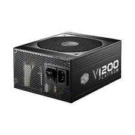

Alimentatre modulare da 1200W, lo si trova in pc che richiedono molta ptenza per funzionare.
Come per ogni lavoro efettuato su comoponeti elettriche quando si lavora direttamente sull'hardware di un pc bisogna prestare molta attenzione sia a non danneggiare i componenti che, in alcuni casi (come la cpu), sono molto costosi, sia a non ferirsi.
Per prevenire dei danni alla persona si possono seguire delle semplici precauzioni:
Spegnere l'alimentatore così da interrompere il passaggio della corrente nei componenti;
Ad alimentatore scollegato premere il tasto di accensione così da rimuovere corrente rimasta in circolo;
Evitere di mettere mano all'alimentatori senza guanti isolanti poichè può rimanere della carica residua nei condensatori.
Pre prevenire invece danni ai componenti:
Toccare il meno possibile i pcb delle componenti;
Indossare un braccialetto antistatico;
Non usare cacciaviti magnatici vicino agli hard disk;
Per pulire il pc usare solo panni antistatici, aria compressa e, solo in alcuni casi, alcool isopropilico.